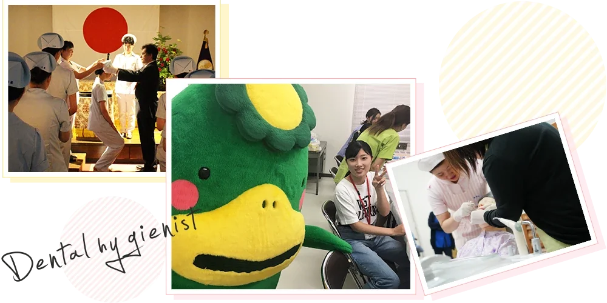
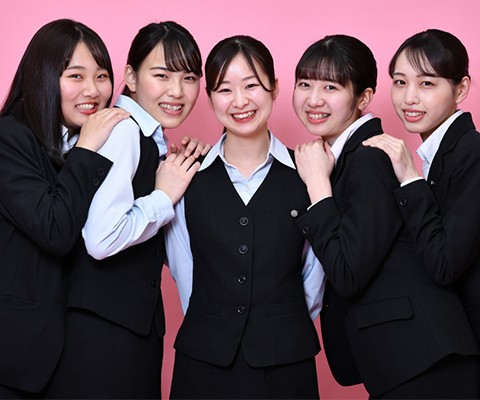
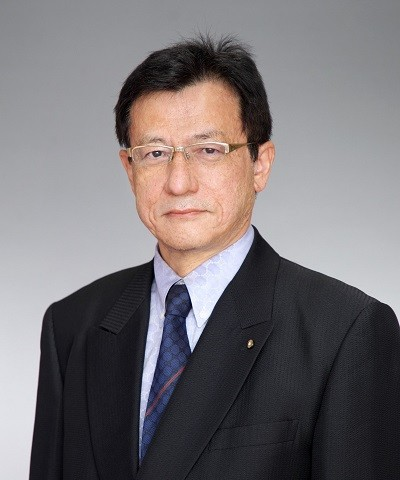
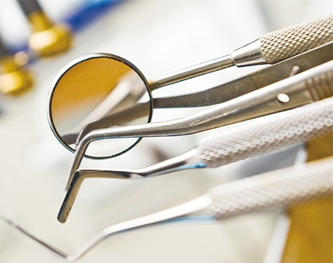
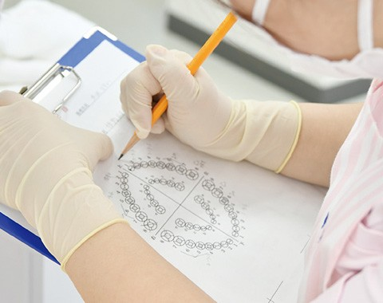
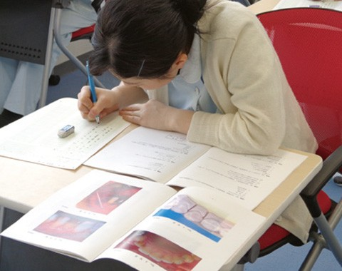
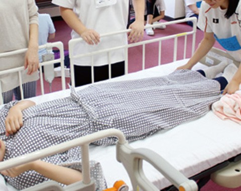

学校案内
HISTORY
創立41年の久留米歯科衛生専門学校は福岡県南部で唯一の『国家資格 歯科衛生士』養成専門機関です。
一般社団法人久留米歯科医師会による運営がなされております。
久留米歯科医師会において昭和55年に開設され、数多くの歯科衛生士を輩出し、地域医療に貢献してきました。
医療の街「久留米」の閑静な住宅街に位置し、近隣大学との強い連携のもと、専門性豊かな講師陣を迎え指導にあたっています。
また、より高い専門性を得るために、校外実習にも多くの協力医療機関を配するなど、充実した教育環境づくりに日々努めています。

-
明治40年
(1907年)福岡県歯科医師会久留米支部発会
-
昭和22年
(1962年)社団法人久留米歯科医師会設立
-
昭和55年
(1980年)福岡県南口腔保健センター落成
久留米歯科衛生専門学校開校 -
平成17年
(2005年)新校舎完成
修業期間を2年制から3年制へ移行 -
平成25年
(2013年)社団法人から、非営利組織一般社団法人へ改組
長年にわたり、本校は全て歯科医師会の先生方の支えによって運営されています。
本校の基本理念 歯科医療の専門知識と技術の習得を行うとともに、豊かな人間性をを育み、学生自らが歯科衛生士としての自覚を持ち、自ら成長する力を身につけるよう導く。教育目標
- 医療人としての自覚を持った歯科衛生士の育成
- 地域保健に貢献できる歯科衛生士の育成
- 歯科衛生士を生涯の職業とする確固たる意志を持った人材の育成
学校概要
ABOUT SCHOOL
優れた講師陣

本校は、福岡県南、筑後地方に、ただ一校の歯科衛生士養成機関として、社団法人久留米歯科医師会が昭和55年4月、厚生大臣指定を受け、歯科衛生士の育成にあたっています。
現在、久留米大学医学部、福岡歯科大学、 九州歯科大学、九州大学医学部・歯学部、久留米歯科医師会等のすぐれた教授陣と最新の近代設備を施した校舎にて、 基礎科目、基礎実習、または病院においての臨床実習、その他一般教養とともに社会性や豊かな人間性を育む「心の教育」にも力を入れており、 “有能な衛生士”とともに“立派な社会人”となってもらうための教育を行っています。
日々、学校、講師陣、学生の “和の精神” をモットーに、「知・徳・体」の調和のとれた人材育成を目指した教育の充実にいそしんでおります。
カリキュラム
（準備中）この部分は、新サイトで作り直します。
大学等修学支援法による公開情報
一般教育
幅広い視野と教養を身につけるため、人文科学・社会科学・自然科学・ 外国語をカリキュラムに組み込んでいます。
また、OA化時代に対応するICT学習、歯科医師のアシスタントとしての秘書教育など一般 社会でも優秀な人材となるよう教育しています。
［科目］
心理学・倫理学・生物学・化学・英会話・情報処理論
専門教育
現在の歯科医療は社会の要望に応えて、その内容が高度化・精密化しています。
本校では、優秀な教員に加え大学教授陣の指導のもと、豊富な実習・講義により社会ですぐに役立つ実践力を身に付けます。
1年生に歯科医学に関する 基礎から徐々に専門的な歯科知識と技術を習得し、2・3年生には校内の除石実習、 校外では大学付属病院・歯科医院・老人保健施設などで臨床実習を行います。 介護職員初任者研修資格習得やコンピュータによる実習など、より深く実践的に学びます。歯科衛生士の質の向上および地位の向上に努め、国家試験合格を目指します。
［科目］
歯科衛生士概論・解剖学・口腔解剖学・組織学・生理学・病理学・微生物学・薬理学・口腔衛生学・公衆衛生学・栄養指導・衛生行政・社会福祉・歯科臨床概論・歯科保存修復学・歯科補綴学・口腔外科学・小児歯科学・歯科矯正学・歯科予防処置・歯科診療補助・歯科保健指導・臨床実習
MESSAGE

学校長メッセージ
歯科衛生士は国家資格であり社会より求められる職業です。
高齢化社会の到来により、口腔内の管理が体全体の健康の維持、健康寿命の延長に繋がることが認識されています。一般歯科のみならず、介護の現場でも歯科衛生士の重要性、需要は増加しています。
久留米歯科衛生専門学校では時代に即したカリキュラム、最新の設備、歯科医師会立を生かした経験ある講師陣、豊富な実習病院、学びやすい学費の設定で歯科衛生士を志す皆さんを受け入れております。
本校では将来、仕事に誇りを持ち充実した生活を送れるように、必要な知識を深め、人としての信頼を得ることが出来る人材を育成することが私どもの使命と考えており、歯科衛生士という国家資格を取得し将来活躍するための基礎力と実践力の取得を目指します。
一般社団法人久留米歯科医師会立
久留米歯科衛生専門学校 学校長首藤 俊介
久留米歯科衛生専門学校の特長
PICKUP SCHOOL
久留米歯科衛生専門学校は
開校から40年以上の歴史を持ち約2,000人の卒業生を輩出してきました。

歯科医師会立ならではの「安心」「信頼」の強力なバックアップ体制！
一般社団法人久留米歯科医師会立だから、充実した施設・設備、専門性と全人教育を両立させたカリキュラムが特長です。
歯科医師会をはじめ、歯科衛生士会など関連団体が総力をあげて、本校をサポートしています。
無料で参加や聴講できる研修会、同行見学などがたくさんあり、学びの機会がぐんと広がります。

充実した教育環境で高い国家試験合格率
歯科衛生士としての第一歩を踏み出すための国家試験も、歯科医師会立だからこそ万全な試験対策ができます。
教室での座学ばかりではなく実習を多く取り入れることにより、将来第一線で即戦力になれる力を身に付けます。

学費が安い
歯科医師会立の最大の特長である学費の安さ、本校独自の奨学金制度も完備。安心して学び専門知識や技術を身につけ、国家試験合格を目指すことができます。
国の高等教育修学支援新制度の対象校です。

介護職員初任者研修認定資格も取得
認定資格取得で就職にも有利。
歯科大や地域大学と連携し充実した講師陣
久留米大学、福岡歯科大学、九州歯科大学等とも連携。
通学にも便利なアクセス環境
西鉄櫛原駅より徒歩10分。
特急停車の西鉄久留米駅。新幹線停車駅でもあるJR久留米駅からも20分。
離職後も復職が容易
社会的にしっかりと保証された一生有利な国家資格！！
様々な分野の求人があります。
久留米歯科衛生専門学校には常に多くの求人のいただいています。卒業時はもとより、卒業後もライフスタイルの変化により一度離職してしまったあともまた、ずっと安定した仕事に復帰できる歯科衛生士はまさに女性に最適な国家資格と言えます。
新卒有効求人倍率
卒業後の進路決定率
本校についてもっと詳しく